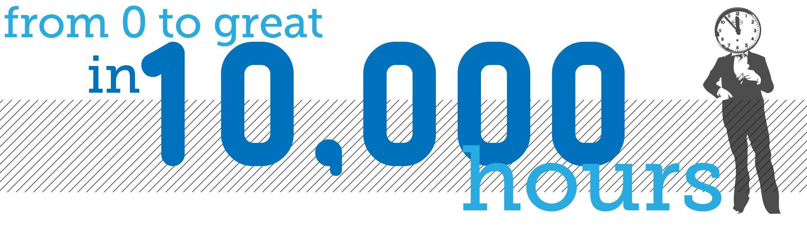
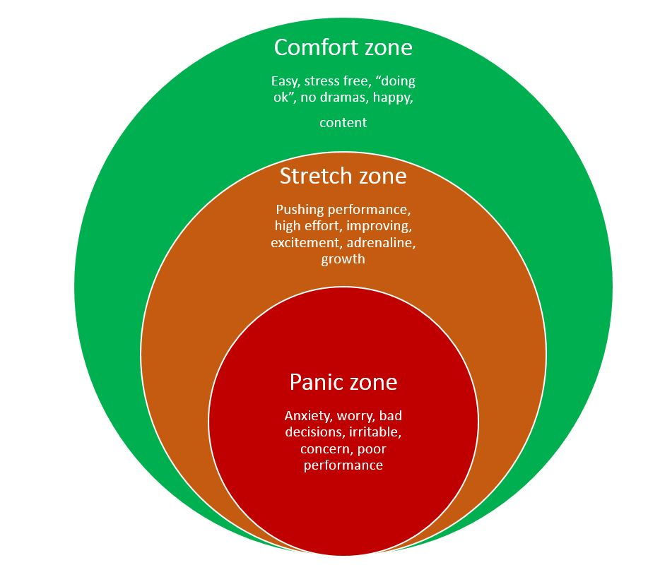
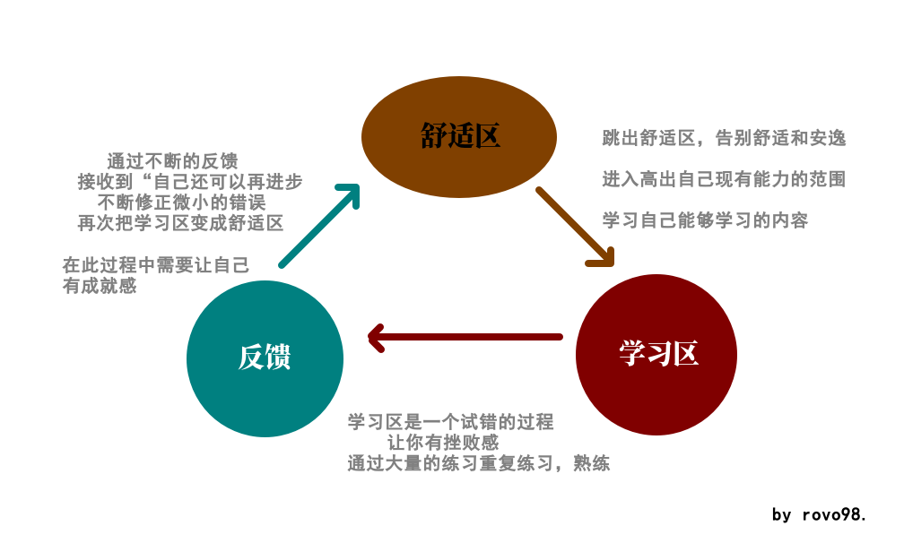
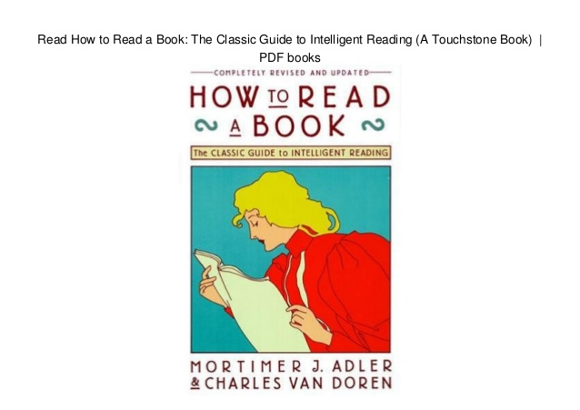
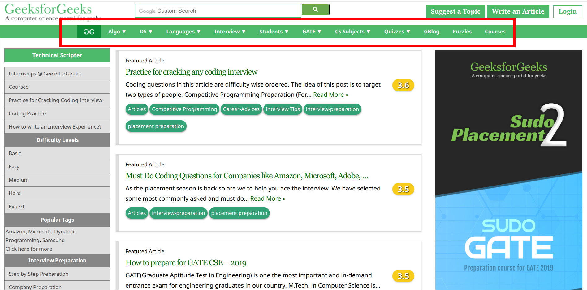
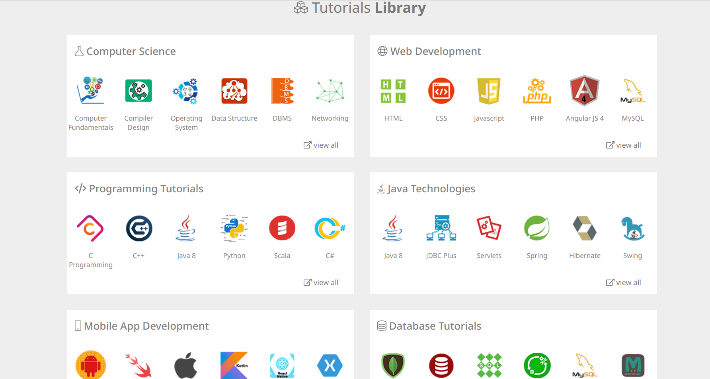
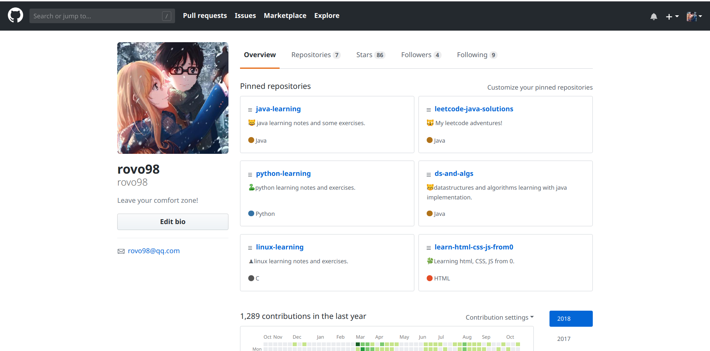
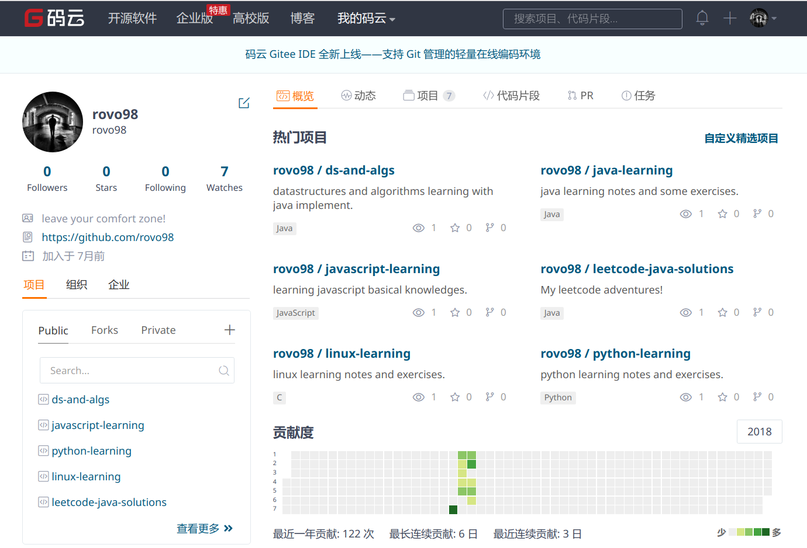
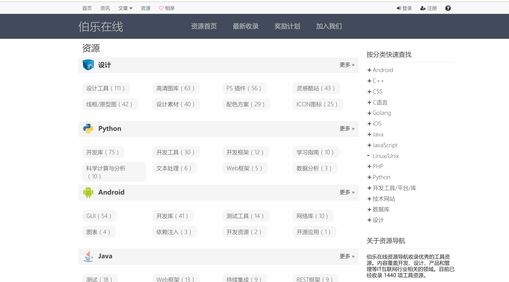
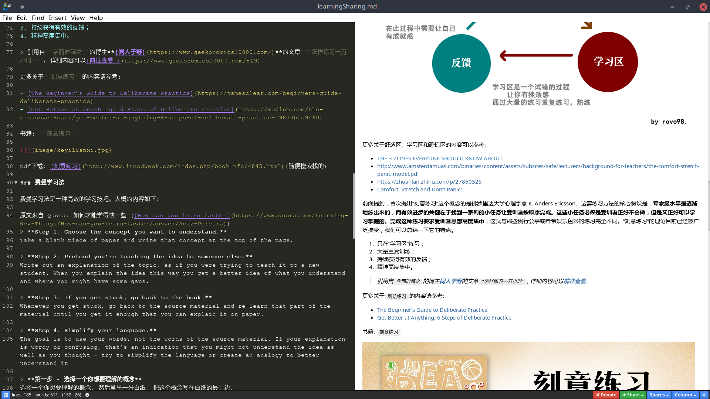

Temporary file. 临时文件: 2018.11.02 deadline: 2018.11.03
引入
本文旨在告诉你们我所知道的一点点东西，分享的内容也只是让你们知道和了解一些东西。
说到分享学习心得，我想关于学习的话，我们每个人对于学习都应该会有自己的看法，每个人的学习方式可能也都不太一样。但是应该比较认同，大学中的学习绝对是不同于高中中的学习的，我的个人认为是, 在高中，学习目的就是为了考试，能做出题目就行了。(LOL: 我相信很多人在高中毕业几年后，基本就把高中所学的东西都遗忘了，毕竟所学知识在日常生活中很少使用到（是指自己你不知道怎么应用，毕竟当初学的时候，大多数都是把它们当做工具来解题使用的）)
因此，我想说的是我们不能按照原来的套路来了，大学中的学习已经和高中不一样了，插语：不知道你们高中的老师有没有跟你们说过，高中高三努力把高考考了，到了大学就轻松了。（什么60分万岁，多一分浪费之类的话）。
首先，我们需要先对比一下高中和大学学习区别(我所认为的)：
- 在大学里，相比于高中，没有了很多的条条框框，让我们变得更加自由，但这不意味着可以放纵自己；
- 高中学习，我们优先掌握的学习内容只是高考考纲内容，而在大学中，要想有所收获，决不能将目光只放在老师课堂上教授的内容上，要更加拓宽自己的知识面；
- 在大学中，成绩不代表一切，但说明一些问题；
- 在高中，有问题时，有老师/同学帮忙解决(对于大部分人来说)，但是在大学必须学会自己尝试解决问题，扮演之前老师/同学角色的一般是书，以及网上能够查阅的各种资料。（并不是说不能询问老师/同学，只是侧重于自己解决）
- 。。。。
关于学习方法(暂定)
主要分享一下我所了解到的关于学习的一些个人觉得比较好的内容。
一万个小时定律
大众所熟知的“一万小时定律”是由美国畅销书作家马尔科姆‧格拉德威尔(Malcolm Gladwell)在《异类》一书中指出，其实，这个定律不是格拉德威尔发明的，但他确实在《异类》中普及了“一万小时定律”。

首先需要说明的是，这个10000不是确数，不是说你得不多不少正好10000小时。大约可以理解成平均需要10000小时。比如说有研究显示，要达到国际象棋大师级水平，刻意训练的时间从3000小时到25000小时不等，差不多平均6700小时。
正如很多知友所言，这个说法来自K. Anders Ericsson的论文《The Role of Deliberate Practice in the Acquisition of Expert Performance》，所以要了解这个说法到底怎么回事儿，应该看看原始论文。
这篇论文的题目就明确指出Deliberate Practice，也就是刻意的训练。
其实，在19世纪的时候，就有说法，认为你只要是花足够时间，就能在你花时间的那个领域做得很棒，但是忽略了花时间练习的内容。到了19世纪末，就有人发现，其实如果仅仅是简单的重复，你很可能只是达到一个平台的水平，而不是达到最棒。所以，Ericsson提到了刻意训练这个概念。
为了能把刻意训练说清楚，Ericsson把刻意训练和另外两种活动做了对比，玩儿（play）和工作（work）。
了解到所谓“一万个小时定律”并不是简单的重复，为了更好的理解刻意练习,我们先了解下面的内容:
心理学研究说，人类对于外部世界的认识可分为三个区域：
舒适区（comfort zone），学习区（stretch zone），和恐慌区（stress zone）。 舒适区：舒适区的定义及理论,在舒适区我们得心应手，每天处于熟悉的环境中，做在行的的事情，和熟悉的人交际，甚至你就是这个领域的专家，对这个区域中的人和事感觉很舒适。但是学到的东西很少，进步缓慢，而且一旦跳出这个领域，面对不熟悉的环境及变化，你可能会觉得有压力，无所适从。 学习区：是我们很少接触甚至未曾涉足的领域，充满新颖的事物，在这里可以充分的锻炼自我，挑战自我。比如，生活中，换一条上班的路线；学习中，接触另一个专业的书籍；工作中，切换到另外一个岗位。 恐慌区：在这个区域中会感到忧虑，恐惧，不堪重负。比如在公共场合演讲，或者从事一些危险的极限运动。

如果我们长期待在自己所熟知的领域——舒适区，那么我们的能力很难有所增长。
只需要在舒适区结合或者关联较紧密的学习区不断开垦，将学习区逐渐转化为新的舒适区，那么我们的恐慌区就会越来越小，我们的专业度也会越来越强。无效或低效努力除了掩饰自己安慰自己，结果只会是浪费了宝贵的时间彻底摧毁了我们进步的空间。
这里只是针对学习而言的，对于其他方面，并不适合这么做，例如：在生活上，我一般是待在自己的
舒适区中的；毕竟“不作死就不会死”嘛！

更多关于舒适区、学习区和恐慌区的内容可以参考:
前面提到，首次提出“刻意练习”这个概念的是佛罗里达大学心理学家 K. Anders Ericsson。这套练习方法的核心假设是，专家级水平是逐渐地练出来的，而有效进步的关键在于找到一系列的小任务让受训者按顺序完成。这些小任务必须是受训者正好不会做，但是又正好可以学习掌握的。完成这种练习要求受训者思想高度集中，这就与那些例行公事或者带娱乐色彩的练习完全不同。“刻意练习”的理论目前已经被广泛接受，我们可以总结一下它的特点。
- 只在“学习区”练习；
- 大量重复训练；
- 持续获得有效的反馈；
- 精神高度集中。
更多关于刻意练习的内容请参考:
书籍: 刻意练习
pdf下载: 刻意练习(随便搜索找的)
费曼学习法
费曼学习法是一种高效的学习技巧。大概的内容如下:
原文来自 Quora: 如何才能学得快一些 (How can you learn faster)
Step 1. Choose the concept you want to understand.
Take a blank piece of paper and write that concept at the top of the page.Step 2. Pretend you’re teaching the idea to someone else.
Write out an explanation of the topic, as if you were trying to teach it to a new student. When you explain the idea this way you get a better idea of what you understand and where you might have some gaps.Step 3. If you get stuck, go back to the book.
Whenever you get stuck, go back to the source material and re-learn that part of the material until you get it enough that you can explain it on paper.Step 4. Simplify your language.
The goal is to use your words, not the words of the source material. If your explanation is wordy or confusing, that’s an indication that you might not understand the idea as well as you thought – try to simplify the language or create an analogy to better understand it第一步 - 选择一个你想要理解的概念
选择一个你想要理解的概念, 然后拿出一张白纸, 把这个概念写在白纸的最上边.第二步 - 设想一种场景，你正要向别人传授这个概念
在白纸上写下你对这个概念的解释, 就好像你正在教导一位新接触这个概念的学生一样. 当你这样做的时候, 你会更清楚地意识到关于这个概念你理解了多少, 以及是否还存在理解不清的地方.第三步 - 如果你感觉卡壳了, 就回顾一下学习资料
无论何时你感觉卡壳了, 都要回到原始的学习资料并重新学习让你感到卡壳的那部分, 直到你领会得足够顺畅, 顺畅到可以在纸上解释这个部分为止.第四步 - 为了让你的讲解通俗易懂，简化语言表达
最终的目的, 是用你自己的语言, 而不是学习资料中的语言来解释概念. 如果你的解释很冗长或者令人迷惑, 那就说明你对概念的理解可能并没有你自己想象得那么顺畅 — 你要努力简化语言表达, 或者与已有的知识建立一种类比关系, 以便更好地理解它。
更多有关费曼学习技巧的参考:
更多
说到效率问题，突然想到不得不说一下 80/20 rule (80/20法则)
参考wikipedia上简单介绍:
The principle was suggested by management thinker Joseph M. Juran. It was named after the Italian economist Vilfredo Pareto, who observed that 80% of income in Italy was received by 20% of the Italian population. The assumption is that most of the results in any situation are determined by a small number of causes.
80%的产出取决于20%的投入
80/20的应用更多的可以参考:
- 想要提高效率，就得不公平 - 来自同人于野(该博主写的文章都挺不错的，可以看一下)
- 例如有篇探讨记忆的文章 - “超强记忆力是个邪道功夫“ - 引用
物理学家费曼念研究生的时候，曾经出于玩票的心理跟生物系的人一起上过一门《细胞生理学》。这门课要求他读一篇涉及到猫的肌肉构造的论文，并且要在课堂上介绍这篇论文。费曼完全不知道论文中提到的各个肌肉位于猫身上的什么部位，自己事先找资料学习了一番。等到费曼作报告的时候，他先在黑板上画了一只猫， 然后在图上标记各部分肌肉的名称。生物系同学纷纷告诉费曼，这些名称他们早就知道了。
年轻气盛的费曼，立即当着全班同学说了一句话：
“你们都知道？难怪你们念了四年的生物，我却还是一下
便追上你们的程度了。”
费曼在自传里说，这帮学生物的把大好时间都浪费在死记名词上，而这些东西只要15分钟就能查到。
- 例如有篇探讨记忆的文章 - “超强记忆力是个邪道功夫“ - 引用
- What is 80/20 rule and why it will change your life
- Apply the 80/20 rule to everything
以上只是简单的了解和知道的有这样的方法和技巧(理论)的存在，能不能为自己所用，要看自己的理解和应用了。
关于阅读和资料查找
前面说过，很多时候，书籍，和网上的资料一般扮演着老师/同学的角色。下面简单介绍一下如何跟它们打交道。
关于阅读
关于阅读方面的，强烈推荐以下这本书:如何阅读一本书

书中将阅读分为四个阶段:1、基础阅读，2、检视阅读，3、分析阅读，4、主题阅读，最终目标是达到主题阅读
看了之后，才知道，自己读了这么多年书，原来连阅读都没学会(自己原来很多书都白看了，只停留在基础阅读阶段)
知乎上的一篇文章，可以快速的了解这本书主要讲述的内容:
资料查找
一定要学会科学上网, 如何科学上网? 《科学上网翻墙教程》，科学上网资料(参考资料，更多的可以自行搜索)
另外github别人整理的资源:
更加高效地进行搜索: Google搜索技巧:
资源分享
分享一些学习网站，以及一些有用的工具。
再次强调，所谓的分享，这篇所谓的学习分享只是个人认为可以了解的一些东西而已，更多的内容需要靠你们自己发掘。
网站分享
综合性的学习网站:


基于git版本控制的代码托管平台:
github: https://github.com

gitlab: https://about.gitlab.comcoding: https://coding.net - 国内gitee: https://gitee.com - 码云 - 国内


工具
git：
关于git的使用，这里推荐廖雪峰老师的教程: Git教程- 廖雪峰的官方网站
markdown: 快速做笔记、写博客，整合学习思路等，可以配合思维导图(如:Xmind等)使用。

more
更多的东西，你们可以自己去找，就当做是留给你们的新手任务了。